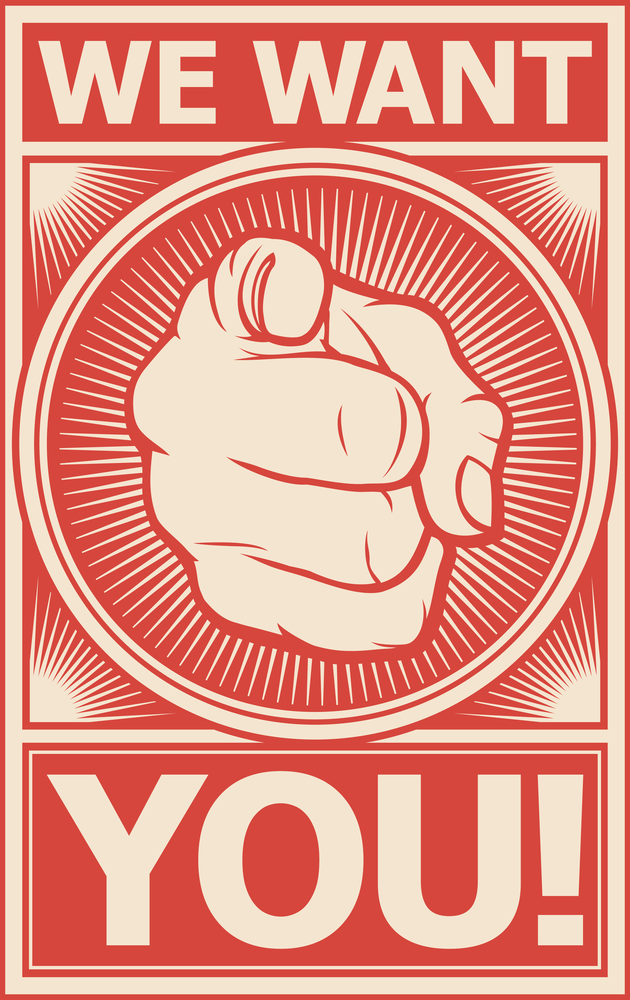

Community Voting
When you hold VMF Coin, you're not just holding a digital coin - you're becoming part of a community that's changing how we support our veterans. Here's what makes it really cool you get to help decide:
- When we give extra support to veterans through charity giveaways
- How we can make our platform better for everyone
- Which charities we should partner with to help more veterans
- Which organizations become official partners in our mission
The best part? Everyone gets an equal say! It doesn't matter if you own one VMF Coin or one thousand - every single holder gets one vote. We believe that everyone who supports our mission should have an equal voice in how we help our veterans. This is exactly what our DAO (Decentralized Autonomous Organization) is designed for - putting the power in the hands of our community. We believe that the people who care about our mission should be the ones who help shape it. That's why we've built a system where every VMF Coin holder has an equal voice, regardless of how many coins they hold. Think of it like being part of a big team where everyone gets a say. Whether you're a long-time supporter or just joining us, your voice matters equally. It's like having a special power that helps us make sure we're always doing what's best for our veterans. We believe that everyone should have a say in how we support our nation's heroes. That's why we're building this community together - so we can all work towards making a bigger difference in the lives of those who served.
Participate in important decisions about charity selection, platform development, and community initiatives.
VOTE HERE
Charity Selection
VMF Coin holders get one vote for every coin they own, allowing them to directly participate in choosing new charitable partners through our blockchain-based voting system. Every vote counts equally, with all decisions recorded transparently on the blockchain to ensure fair and verifiable community governance.

Holiday Giveaway
VMF Coin hosts seven charitable giveaways throughout the year, where community members vote to select recipient charities. Every VMF Coin holder gets one vote for each coin they own, allowing them to directly influence which military families and veterans receive support through our blockchain-based voting system.

Community Initiatives
VMF Coin community members can submit their own ideas for system improvements through our DAO proposal system, with each member able to create any proposal. The community then votes on these proposals using our blockchain-based voting system, allowing everyone to shape VMF's future through direct participation.

National Holiday Community Voting Giveaway Schedule
- National Medal of Honor Day (March 25th)
- Memorial Day (Last Monday in May)
- Flag Day (June 14th)
- Independence Day (July 4th)
- Purple Heart Day (August 7th)
- Patriot Day (September 11th)
- Veterans Day (November 11th)
Vote or Learn How
The Power of A Decentralized System
Imagine you're at a big community meeting where everyone gets an equal say in the decisions. That's basically what decentralization is -
instead of one person or group making all the decisions, everyone who's part of the community helps decide what happens.
VMF Coin is built on this idea, but instead of a physical meeting, we use blockchain technology to make it happen. Here's how it works:
What makes VMF decentralized is that every VMF Coin holder gets one vote - no matter how many coins they own. Decisions are made by the
community, not by a boardroom. Everything is transparent and visible to everyone, and no single person or group can control it all.
VMF Coin is part of something bigger called Web3, which is like the next generation of the internet. It's designed to be owned and controlled
by the people who use it, not by big corporations. We're part of this movement because we're built on blockchain technology, governed by our
community, transparent, and fair - putting power in the hands of users.
This isn't just about VMF Coin - it's part of a bigger movement that's changing how organizations work worldwide. When more projects become decentralized, people have more control over their own data, communities can make their own decisions, power is distributed more fairly, and technology serves people better.
At VMF Coin, we're not just building a platform - we're helping create a better way for communities to work together and make decisions that benefit everyone. And the best part? You can be part of it just by holding VMF Coin and participating in our community!